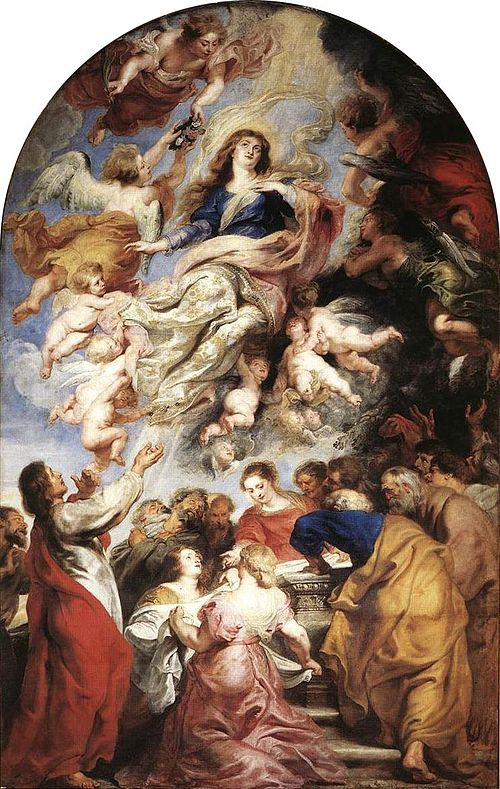
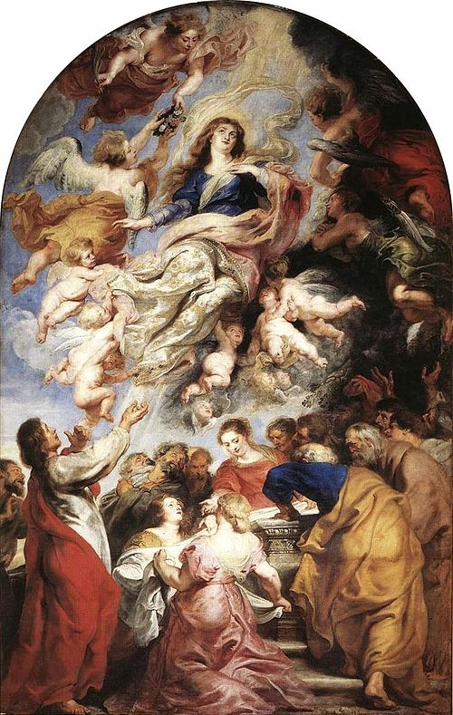

Artistas Barrocos
Essa página falará um pouco sobre os artistas barrocos dos séculos XIV e XV. Esse período foi marcado pela contrarreforma, com a Igreja tentando recuperar fiéis depois da reforma protestante. As obras desta época têm o objetivo de expressar a teatralidade e dualidade com grande contraste de luz e sombras(chiaroscuro). O nome "barroco" significa peróla irregular.
Gian Lorenzo Bernini
Gian Lorenzo Bernini nasceu na Itália em 1598 e morreu em 1680. Foi um grande escultor e uma das suas obras mais famosas é "O Êxtase de Santa Teresa" que retrata uma lenda em que Apolo foi proibido de tocar em Teresa por sua esposa. Assim que Apolo a tocou, ela virou uma árvore.

Michelangelo Merisi (Caravaggio)
Michelangelo Merisi, conhecido como Caravaggio, foi um pintor italiano que nasceu em 1571 e morreu em 1610. Ele utilizava a técnica do chiaroscuro em todas as suas obras. Uma obra famosa de Caravaggio é "Narciso", retratando Narciso, que ao olhar seu reflexo, se apaixonou pela própria imagem.
Rembrandt Harmenszoon van Rijn
Rembrandt Harmenszoon van Rijn nasceu na Holanda em 1606 e morreu em 1669. Uma obra sua é "A Aula de Anatomia do Dr. Tulp", retratando o Dr. Tulp com seus alunos dissecando uma pessoa, algo proibida na Idade Média, mas depois permitido com o Renascimento.
Johannes Vermeer
Johannes Vermeer foi um pintor holandês que nasceu em 1632 e morreu em 1675. Ele pintou uma das obras mais famosas que conhecemos chamada "Moça com Brinco de Pérolas".
Peter Paul Rubens
Peter Paul Rubens foi um pintor alemão que nasceu em 1577 e morreu em 1640. Uma obra sua é "A Assunção de Virgem Maria" que foi um retábulo para o altar-mor da Catedral de Nossa Senhora (Antuérpia), onde permanece até hoje.
 

Diego Velázquez
Diego Velázquez foi um pintor espanhol que nasceu em 1559 e morreu em 1660. Sua obra mais famosa é "As Meninas", que representa 3 meninas da corte. A obra chama a atenção do espectador porque induz ele a pensar que faz parte da obra. Isso ocorre porque os personagens da imagem pareçem estar olhando para o observador. Porém, devido a um espelho no fundo da obra, podemos ver que eles estão olhando para o rei e rainha da Espanha.
Veja a seguir uma tabela com as principais informações dos textos que acabou de ler.
| Nome | Origem | Época | Obra Mais Famosa |
|---|---|---|---|
| Bernini | Itália | 1598-1680 | O Êxtase de Santa Teresa |
| Caravaggio | Itália | 1571-1610 | Narciso |
| Rembrandt | Holanda | 1606-1669 | Aula de Anatomia do Dr. Tulp |
| Vermeer | Holanda | 1632-1675 | Moça com Brinco de Pérolas |
| Rubens | Alemanha | 1577-1640 | A Assunção de Virgem Maria |
| Velázquez | Espanha | 1599-1660 | As Meninas |
| Tabela criada por Lucas Valiati Gatto | |||